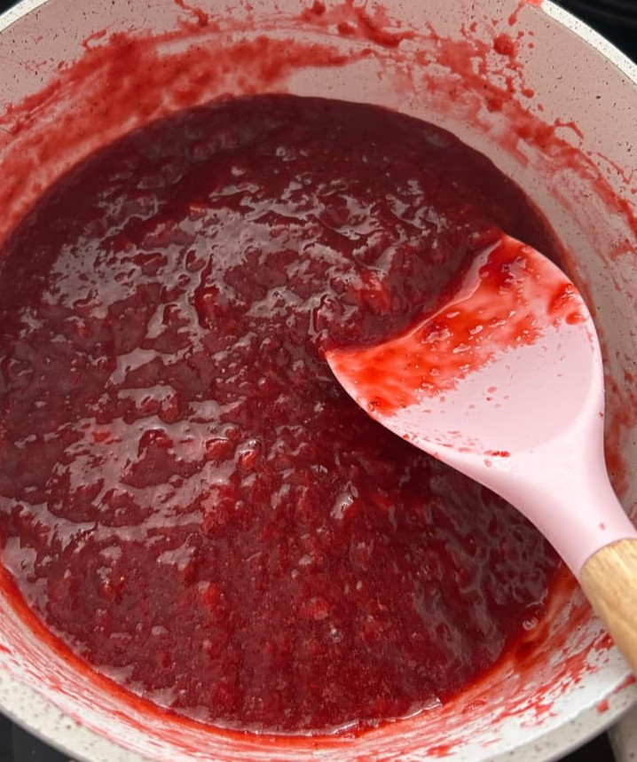
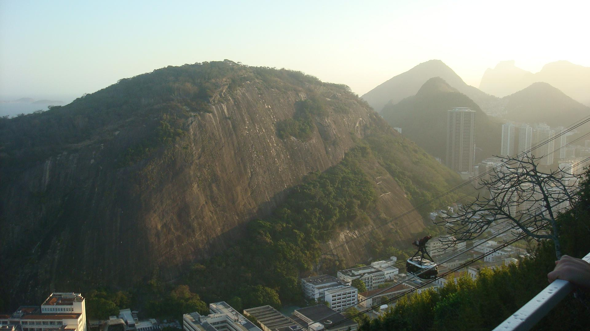
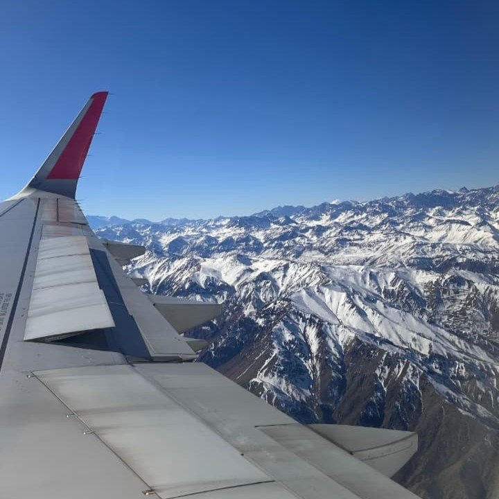
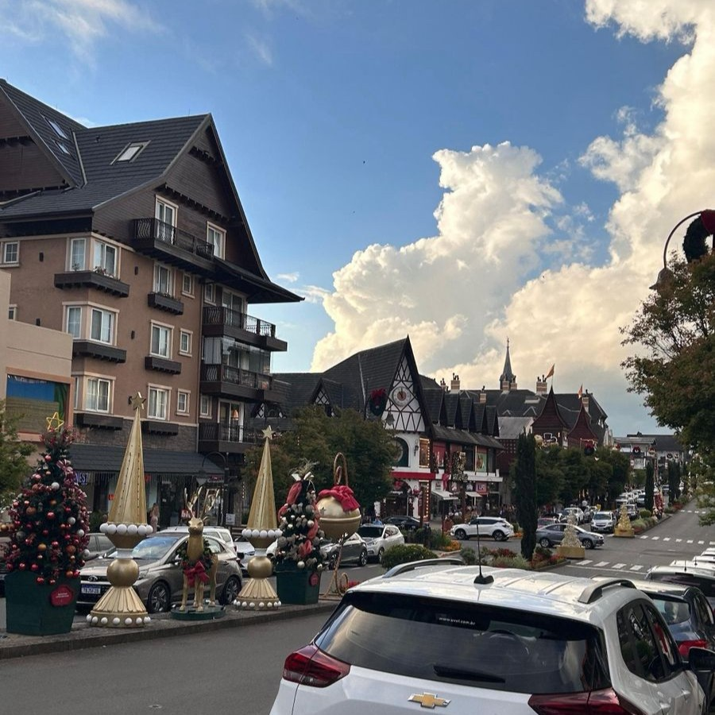
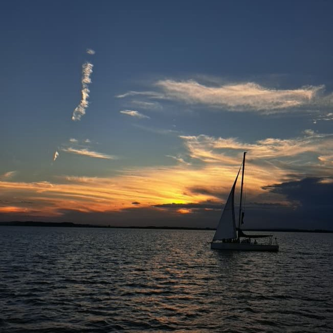
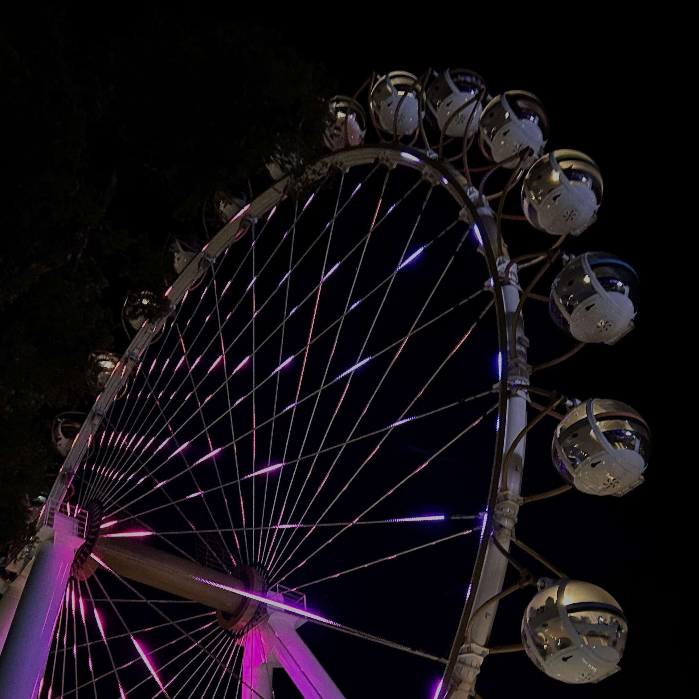
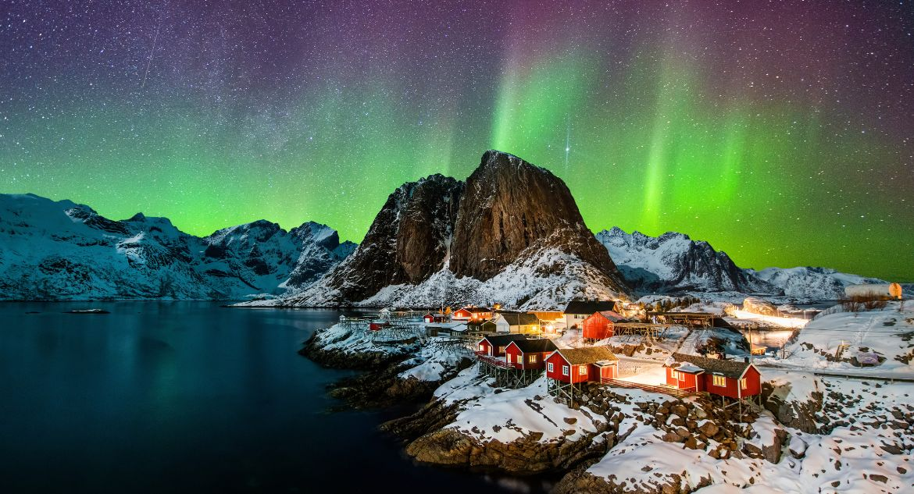
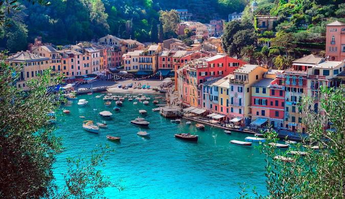
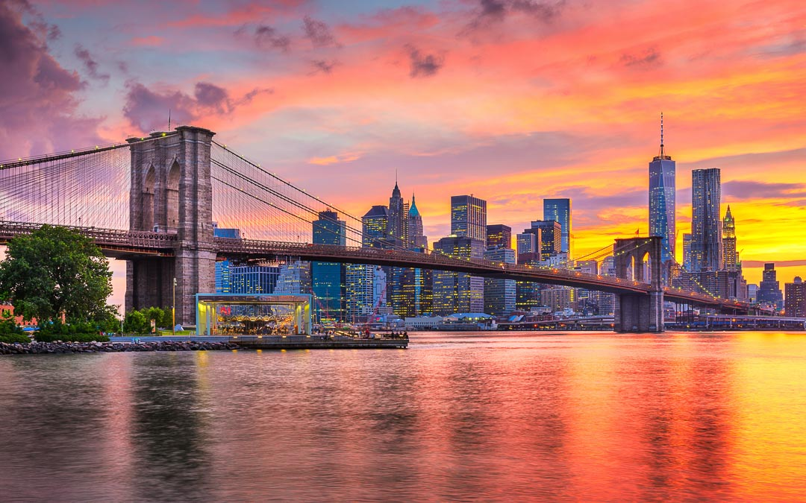

Página principal

Nathália Melo Humpel
15 anos
24/03/2011
Curiosidades
- Minha flor preferida é margarida, porque era o nome da minha vó.
- Tem só 21 pessoas no Brasil com meu sobrenome(Humpel) e são todos da minha família
- Estudei por 10 anos na mesma escola.
- Amo cozinhar

Lugares que já visitei
- Rio de Janeiro: Fui a bastante tempo mas me lembro de como gostei e era bonito.

- Chile: Desde pequena meu sonho sempre foi conhecer o Chile por conta da neve e ano passado eu fui. Lá é muito lindo.

- Gramado: Uma das cidades mais bonitas das Serra Gaúcha, com arquitetura europeia linda.

- Porto Alegre: É a capital do Rio Grande do Sul mas é uma cidade bem pequena e bonita.

- Canela: Uma cidade pequena no Rio Grande do Sul que fica do lado de Gramado.

Lugares que gostaria de visitar
- Grécia: Acho o país muito bonito, principalmente a arquitetura.
- Noruega: Eu gosto bastante de frio e lá tem aurora boreal, eu ia amar conhecer.

- Itália: Sempre que vejo o país em filmes me da muita vontade de conhecer porque lá tem bastante história e é bem bonito.

- Nova York: Acho a cidade muito bonita e também gostaria de fazer compras lá.
